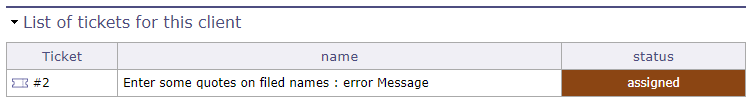

Clients¶
Le client est l’entité pour laquelle le projet est défini.
C’est généralement le propriétaire du projet et, dans de nombreux cas, le payeur.
Il peut s’agir d’une entité interne, dans la même entreprise, ou d’une entreprise différente, ou de l’entité d’une entreprise.
Le client défini ici n’est pas une personne. Les personnes réelles dans une entité client sont appelées « contacts ».

Écran des clients¶
Section Description
Champ |
Description |
|---|---|
Identifiant unique pour le client. |
|
|
Nom abrégé du client. |
|
Type de client. |
Code client |
Code du client. |
Délai de paiement |
Le délai de paiement est indiqué sur la facture pour ce client. |
Taxe |
Taux de taxe appliqués aux montants des factures pour ce client. |
Numéro de taxe |
Numéro de référence fiscal, à afficher sur la facture. |
Clos |
Indicateur pour signaler que le client est archivé. |
Description complète du client. |

Section Adresse
Adresse complète du client.
Section Projets
Liste des projets liés au client.
Section Contacts
Affiche les noms des contacts liés au client.

Section Contacts¶
Vous pouvez créer les contacts directement sur l’écran des contacts.
Vous pouvez également créer les contacts directement depuis la section Contacts.
Cliquez sur
 pour créer un contact
pour créer un contactCliquez sur
 pour supprimer un contact
pour supprimer un contact
Lorsque vous souhaitez ajouter un contact, une fenêtre affichant les contacts existants s’ouvre.
Vous pouvez sélectionner un contact existant ou en créer un nouveau depuis cette fenêtre. Les informations seront directement répercutées dans l’écran Contact.
Liste des devis clients, des commandes clients et des factures clients
Ces sections vous permettent d’avoir un résumé des différents documents financiers concernant le client sélectionné.
Les devis, commandes et factures associés au client sont affichés dans des tableaux pour une lecture facile.

Sections de suivi financier¶
Note
Pour afficher ces sections, vous devez définir les options « lister les devis, commandes et factures sur le formulaire client » sur oui dans les paramètres globaux mais aussi dans les paramètres utilisateur.
Voir : Paramètres globaux Voir : Paramètres utilisateurs
Liste des tickets
Cette section vous permet de voir tous les tickets ouverts pour le client sélectionné.

Liste des tickets pour ce client¶
Note
Pour afficher cette section, vous devez définir les options « afficher les tickets au niveau client » sur oui dans les paramètres globaux mais aussi dans les paramètres utilisateur.
Voir aussi
Gestion de la relation client¶
Le module CRM (Customer Relationship Management) de ProjeQtOr vous permet de centraliser et de suivre toutes les informations et activités liées à la prospection commerciale, depuis l’identification d’un prospect jusqu’à sa conversion en contact ou en client.
Il vous permet de gérer les prospects et leurs caractéristiques, d’enregistrer les sources, événements et actions de prospection, et d’associer des informations financières telles que les devis et les factures.
Un tableau de bord CRM consolidé regroupe ces informations pour offrir une vue d’ensemble de l’activité commerciale et de l’évolution des prospects.
Les sources et événements de prospection fournissent le contexte de l’acquisition des prospects, tandis que les actions de prospection permettent de suivre les interactions qui se déroulent tout au long du processus commercial.
Ensemble, ces éléments offrent une vue complète de l’évolution des prospects.
Les Prospects¶
Enregistrez ici tous les prospects que vous souhaitez suivre.
De nombreux champs sont disponibles dans les sections Description et Détails pour fournir les informations nécessaires afin de qualifier et suivre vos prospects.
La fiche prospect vous permet de stocker des informations telles que le type de prospect, le domaine d’activité, la langue, le titre, le poste, la fonction, le niveau d’engagement et le fait que la personne soit décideur ou non.
Vous pouvez également associer des sources de prospection, des événements de prospection et des actions de prospection au prospect.
Dans la section Traitement des prospects, le bouton Convertir vous permet de convertir un prospect en client et en contact.
Les informations sur l’entreprise du prospect sont utilisées pour créer le client, tandis que les informations personnelles du prospect sont utilisées pour créer le contact.
Prospect potentiellement dupliqué
Cette section vous permet d’identifier un autre prospect susceptible de correspondre à la même entreprise ou à la même personne, afin d’éviter les doublons.
Types de prospect
Les types de prospect vous permettent de catégoriser les prospects selon leur profil ou leur nature.
Cette classification facilite leur identification et leur segmentation, ainsi que l’analyse de l’activité commerciale.
Par exemple, vous pouvez distinguer une entreprise privée, une agence gouvernementale, un organisme public, une association, un cabinet de conseil et un partenaire potentiel.
Domaines / Postes et décideurs
Ces données de référence vous permettent de décrire et de qualifier vos prospects.
Vous pouvez définir leur domaine d’activité, leur poste, leur titre, leur fonction et leur niveau d’engagement, et indiquer s’ils sont décideurs.
Ces informations peuvent ensuite être utilisées pour segmenter les prospects et filtrer les données du CRM.
Informations financières du prospect
Les informations financières liées aux prospects peuvent également être suivies, notamment les estimations prospect.
Une fois qu’un prospect a été converti en client, les devis, commandes et factures clients associés peuvent être suivis depuis la fiche client.
Les événements du prospect¶
Les actions de prospection sont enregistrées directement sur l’écran du prospect concerné.
Elles vous permettent d’enregistrer et de suivre toutes les interactions avec un prospect.
Elles constituent un enregistrement des communications et des activités commerciales, en conservant un historique complet des interactions avec chaque prospect.

Actions de prospection¶
Pour chaque action, précisez notamment :
La date de l’action ;
Le type d’action réalisée : appel téléphonique, e-mail, réunion, démonstration, relance, participation à un événement, etc. ;
La description de l’action
L’historique des actions permet de visualiser les étapes déjà réalisées, d’éviter les relances inutiles et d’identifier rapidement les actions à mener.
Ces informations sont également reflétées dans le tableau de bord CRM, offrant une vue consolidée de l’activité de prospection.
Les événements de prospection¶
Les événements de prospection vous permettent de regrouper et d’identifier les événements ou campagnes générant des activités de prospection.
Il peut s’agir de salons professionnels, de webinaires, de conférences, de campagnes marketing ou d’événements commerciaux.
Ils vous permettent de suivre les prospects générés par un événement spécifique et de mesurer son impact commercial.
Les sources de prospection¶
Les sources de prospection vous permettent d’identifier l’origine des prospects et les canaux par lesquels ils ont été acquis.
Il peut s’agir par exemple d’un site web, du bouche-à-oreille, de salons professionnels, de campagnes e-mail, des réseaux sociaux ou d’activités de vente directe.
Elles vous permettent de mesurer l’efficacité des différents canaux de prospection et d’identifier ceux qui génèrent le plus d’opportunités commerciales.
Tableau de bord CRM¶
Un tableau de bord CRM consolidé regroupe toutes ces informations en une seule vue : prospects, contacts, clients, activités de prospection et données financières.
Il offre une vue d’ensemble complète de l’activité commerciale, facilitant le suivi des opportunités et de leur progression.

Tableau de bord CRM¶
Cliquez sur  pour fermer la colonne correspondante.
pour fermer la colonne correspondante.
Cliquez sur l’icône pour rouvrir la colonne.
 Événements prospect
Événements prospect Devis clients
Devis clients Factures clients
Factures clients
{kind=link}
{kind=link}
{kind=link}
Une fois les colonnes réduites, les icônes se repositionnent automatiquement à l’emplacement prévu.

Chaque ligne et chaque information est cliquable et vous mène à l’écran dédié.
Lorsque toutes les colonnes sont ouvertes et que la largeur de votre écran ne permet pas de les afficher simultanément, une barre de défilement horizontale vous permet d’accéder aux données situées à droite de la page.
La colonne « Entreprise », en revanche, reste visible en permanence, quel que soit le défilement horizontal effectué sur la page.
Plusieurs filtres sont disponibles pour vous aider à isoler les informations dont vous avez besoin, selon le nom, le domaine, la source de prospection, la qualification du prospect, les engagements, le statut ou le représentant assigné.
Un code couleur permet de distinguer les prospects des clients et des contacts.